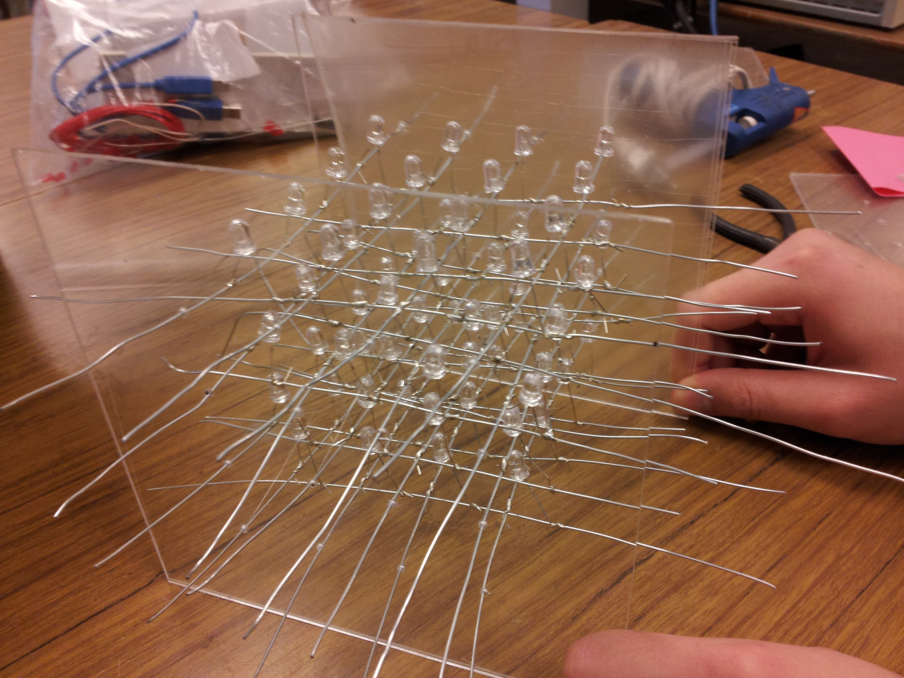

Construction
LED layers
1. Test all the LEDs by following Step 1: Testing the Arduino2. Bend the negative terminal of the LED to the desired distance (in this lab, LEDs were bent at the 1cm mark from the LED light)
3. Make a jig which will hold and align the LEDs in place. A jig is made from a piece of hard material, such as a foam sheet, and 16 holes, slightly smaller than the LEDs, are punched through. The holes are evenly spaced (in this lab, the holes are 1 inch apart) forming 4 rows and 4 columns. 4. The LEDs are placed onto the jig in an identical orientation.
5. Cut bare wire to 6-7 inches
6. Wrap the bent negative terminal of the LEDs around the bare wire to form a row
 7. Repeat step 6 for all the other rows.
7. Repeat step 6 for all the other rows.
8. Solder the wrapped leads to the bare wires to secure the connection 9. Test the connections and ensure that the LEDs still function by grounding the negative terminals and providing a high voltage to the positive terminal from an Arduino board 10. Repeat steps 5-9 for the positive terminals to make columns
11. Repeat steps 1-10 until you have 4 completed layers of 4x4 LEDs.
Cube Casing
1. Assuming you bought the 12x18in. PlexiGlas at your local hardware store, cut 5 squares of 6x6in from the glass as outlined below.To cut, simply mark out the sections needed to cut, and score with an Xacto blade or a similar cutting tool.
*Note* Only 3 squares will be used for this project in particular. It is your choice to have 5 or 3.
2. Create a paper template (6x6in.) to use while drilling the holes through the plexiglass. For these measurements, measure 1.5in. from each side and 1 in. between each hole.
Stack each layer of glass on top of each other with the template on the top. Tape them together.
3. Drill into the holes you drew. IMPORTANT: Start off by using the smallest bit possible and make your way up in thickness so that the glass doesn't shatter. H
Have a support beneath the stacked layers such as wood to prevent the drill bit and/or surface from becoming deformed. 4. Take two layers of glass that was drilled into. Thread one side of each LED layer into the holes, then thread the other side into the second layer of glass. Make sure that the LED layers are orientated in the proper position, so that all negative terminals are coming out of the same side, and same for the positive terminals.
 5. Add in the back and thread the wires through there as well. Tape it to hold it steady.
6. Stick the three sides together using a hot glue gun.
7. From one side, solder the top two rows to lengthy wires (~1/2m each). We can cut them short later. Repeat for the other side, except for the bottom two rows.
 8. Solder wires around the same length as the wires on the sides to all the back leads.
8. Solder wires around the same length as the wires on the sides to all the back leads.
 9. Make sure that the sides are always 6in. apart. Slide in a temporary layer of 6x6in. glass cut out from earlier and tape the sides as shown below.
9. Make sure that the sides are always 6in. apart. Slide in a temporary layer of 6x6in. glass cut out from earlier and tape the sides as shown below.
Remove the layer and now the "cube" can be spaced 6in. after returning it back into its original spacing from a deformed state if need be.
Stage Construction
1. From the remaining plexiglass, cut out the following shapes as outlined below (Use the same method as mentioned in Step 1 of Cube Casing).*Note*Only 3 rectengular sides and one square-base side will be used in our particular cube. (Have the choice of either cutting all as outlined, or only cutting parts mentioned just now).
Also confirm that the square base is at least 8x8in. to accompany the further drilling and space requirements we will need later. 2. Drill approximately four 1cm holes 1 in. from the top, 1 in. from the sides and spaced 1.5 in. apart using the same method mentioned before
Attach the "cube" by gluing it in the center of the drilled plexiglass and glue on the sides for the base/stage as well
Tape the breadboard to the bottom once stage is complete with the cube on top.